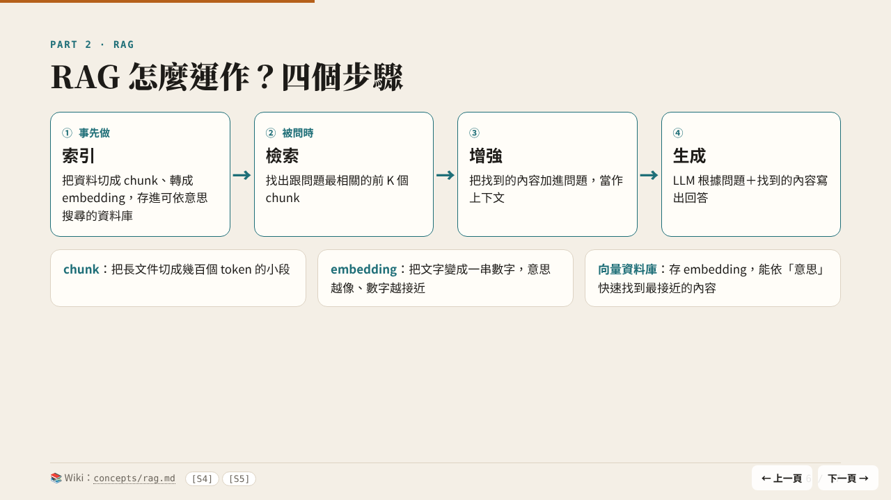
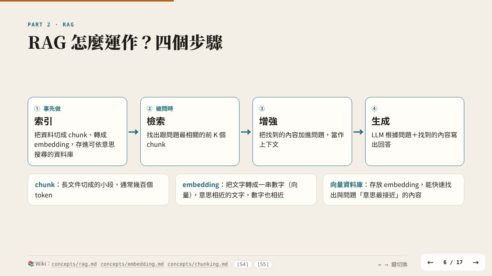
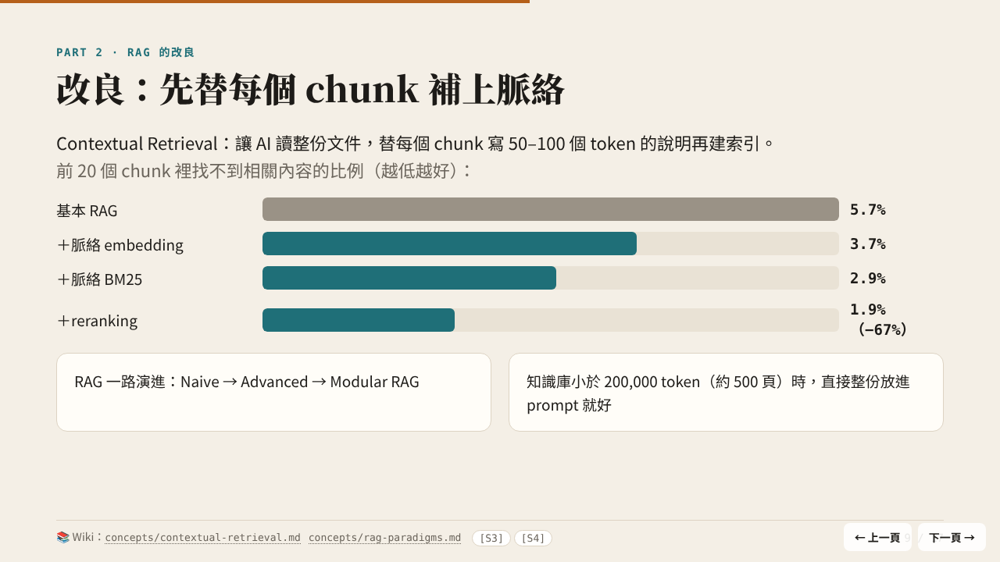
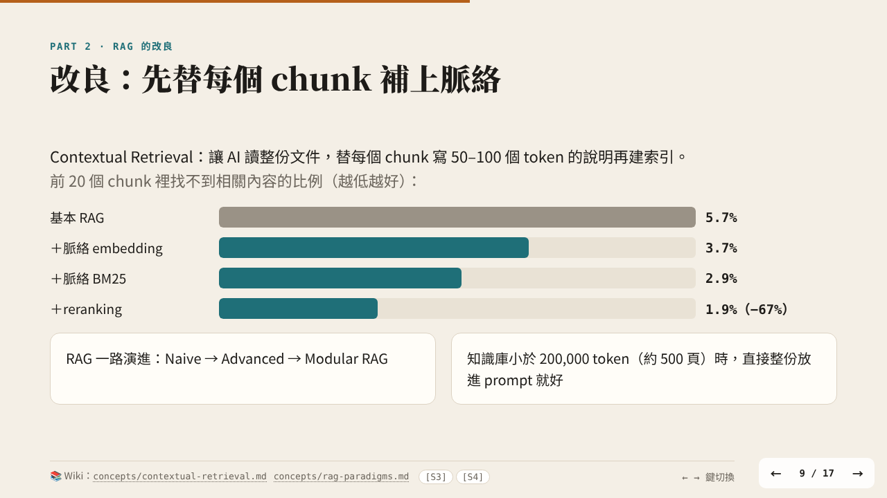

北科 115378024 工管碩一 連顥哲 · 2026/11/23
主題：RAG 與 LLM Wiki——AI 怎麼「記住」知識？
LLM 只知道訓練時學到的東西，還會幻覺。業界有兩種把知識放在模型外面的做法：RAG（被問的時候才去原始資料找）和 2026 年 Karpathy 提出的 LLM Wiki（資料進來時就讓 LLM 整理成互相連結的 wiki）。這份 Wiki 用 LLM Wiki 的方法，整理 7 篇來源（RAG 原始論文、RAG 綜述、Anthropic 技術文、維基百科、Karpathy 原文、DataCamp 分析、一篇批評文），用來教不熟悉的人這兩種做法的差別。
也就是說：這次是用 LLM Wiki 來教 LLM Wiki。
Repo：github.com/xox231213xox-a11y/rag-vs-llm-wiki（結構：raw/ 原始資料 · wiki/ LLM 維護的知識 · CLAUDE.md schema · slides/ 簡報 · scripts/ 檢查腳本 · runs/ 執行紀錄）
取得資料 → 討論 → 編譯進 Wiki → 檢查 → 查詢 Wiki → 整理大綱 → 檢查 → 產生簡報 → 檢查 → 發布。紅框是檢查節點，虛線是失敗時退回的路徑。
| 檢查節點 | 檢查什麼 | 不通過時 |
|---|---|---|
| N4 Lint | frontmatter 齊全、每條重點都有 [Sx] 來源標記、標記的來源存在、數字能在 raw 來源卡找到、連結不斷、沒有孤兒頁、log 格式；再加 LLM 逐條對照 raw 的語意檢查 | 回 N3 重寫該頁 |
| N6c 大綱檢查 | 大綱每頁都指到存在的 Wiki 頁；「要定義的名詞」每個在 Wiki 都有定義句 | 回 N3 從 raw 補；raw 也沒有就回 N1 找新來源 |
| N8 檢查簡報 | C1 每頁有 data-wiki 且頁面存在 · C2 來源標記對得上 · C3 數字在 Wiki 找得到 · C4/C7 名詞在名詞表且 Wiki 有 · C5 頁數與大綱一致 · C6 大綱用到的頁面都有被引用；加上逐頁語意對照、截圖量版面、人工看截圖 | 回 N7 重新生成該頁 |
| v1（第一次執行時） | v2（執行後修改） | |
|---|---|---|
| Wiki lint | 7 篇全部 ingest 完才跑一次 | 每 ingest 一篇就跑（移進迴圈） |
| 大綱 | 寫完直接產生簡報 | 加「要定義的名詞」表＋N6c 大綱檢查，通過才准生成 |
| N3 編譯 | 直接寫 | 每條對照 raw 來源卡，不准用模型自己的知識補 |
| N8 簡報檢查 | C1–C6；截圖腳本有 bug | 加 C7（名詞必須在名詞表）；修好截圖腳本 |
每一頁簡報都標了它引用的 Wiki 頁面（點簡報頁尾的連結也可以直接跳到 Wiki）：
下表照時間順序列出這次執行的每一步，紀錄檔都在 runs/。
| # | 節點 | 做了什麼 | 結果 | 紀錄 |
|---|---|---|---|---|
| 1 | N1 取得資料 | 7 篇來源寫成 raw 來源卡 | 完成 | raw/ |
| 2 | N2 討論 | 兩輪討論，每篇列 3–4 個重點讓人勾選；「Embedding 是什麼」「何時用哪個」被選為不強調；比喻選「圖書館員 vs 百科全書」 | 完成 | log.md |
| 3 | N3 編譯 ×7 | 依序 ingest S5→S2→S3→S4→S1→S6→S7，產生 21 頁 | 完成 | log.md |
| 4 | N4 Lint | 腳本：4 頁 frontmatter 的 sources 沒同步（後來的來源改了舊頁面）。語意：比較頁說得比 S4 多；S5 摘要頁引用了還沒 ingest 的 S2 | FAIL（6） | 01 |
| 5 | N3 → N4 | 修正後重跑 lint | PASS | 02 |
| 6 | N5 → N6 → N7 | 查詢 Wiki、大綱存回 Wiki、產生簡報 v1（17 頁） | 完成 | log.md |
| 7 | N8 check_slides | 第 6 頁「向量資料庫」在 Wiki 找不到 | FAIL（1） | 03 |
| 8 | N8 截圖 | 回報 PASS，但 17 頁數字一模一樣 → 腳本一直量第 1 頁，是假 PASS | 工具 bug | 04 |
| 9 | N8 截圖（修正） | 修好換頁與量測方式後重跑 | PASS | 05 |
| 10 | N8 語意＋看截圖 | 3 處內容不在 Wiki（embedding、向量資料庫的定義、人與 LLM 分工）＋3 個版面問題 | FAIL（6） | 06 |
| 11 | N2 討論 | 問人：embedding 要補進 Wiki 還是從簡報拿掉？→ 決定補一句定義 | 完成 | log.md |
| 12 | N3 → N4 | 從 S5、S4 補 embedding.md；對照 raw 時又抓到自己多寫一句（問題也轉成向量）；立刻 lint | PASS | 07 |
| 13 | 改 graph | v1 → v2（寫進 CLAUDE.md 版本歷史） | 完成 | CLAUDE.md |
| 14 | N6c 大綱檢查 | 新節點第一次跑：大綱兩頁路徑不完整；chunk 在 Wiki 沒有定義句 | FAIL（3） | 08 |
| 15 | N3 → N6c → N4 | 補 chunk 定義、修大綱路徑後重跑 | PASS | 09 10 |
| 16 | N7 → N8 | 產生簡報 v2；C1–C7、截圖版面、人工看截圖 | PASS | 11 12 |
N3 的 6 個：frontmatter 沒同步 3、引用還沒 ingest 的來源 1、寫得比來源多 2。N7 的 6 個：內容不在 Wiki 3、版面 3。N6 的 3 個：路徑不完整 2、要教的名詞 Wiki 沒定義 1。共同模式：只要是 LLM「寫東西」的節點（N3、N7），就容易用自己的知識補洞。



